Trading Confluence with Price Action
Describe confluence???.Don’t answer yet, come with me.
What if you were keeping an eye on the market and noticed that the price was moving toward a resistance level?
What if you checked your Fibonacci retracement and found that the resistance level is also at the 61.8 Fibonacci
level? There's more, too—the general tendency is likewise negative.
You therefore have the following three opportunities lining up for you:
● A general downward trend
● You have a level of resistance where the price is approaching ● and you see that the price is likewise moving
upward toward the
resistance level, which is the fib level of 61.8.
Confluence is what I've just mentioned as an example. A confluence is a level or point in the market where two or
more levels cross over (or come together) to create a hot point, flash point, or confluent point.
Here's an example of how I use Confluence in a trade.
Let me use a trade I made as an actual example. This is the AUDUSD daily chart. Look at it closely and intently.
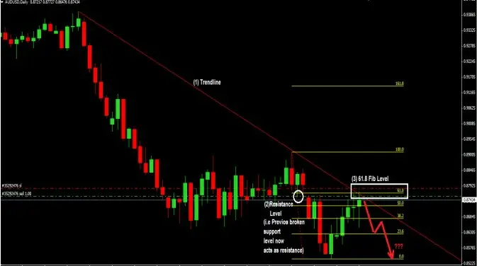
Why I made that trade is as follows:
● To start, I created a downward trendline and watched to see if the price would rise and touch it.
● I also observed that the prior support level, which had been violated, might now function as a resistance level,
pushing the price in the opposite direction. I now have two things coming together as a result.
● After that, I looked at the fibonacci retracement level to determine what the ratio would be if the price reached that
resistance level. It was a startling 61.8%. Sweet! I now see the convergence of three things.
How Then Did I take The Trade?
As I waited for price to reach the confluence zone after switching to the 1-hour period, I noticed a shooting star, a
bearish reversal Candlestick pattern (also sometimes called a bearish pin bar). That gave me the idea to immediately
enter a short trade.
A closer look at the trade setting in the hour I waited to enter the trade is provided below (see chart):
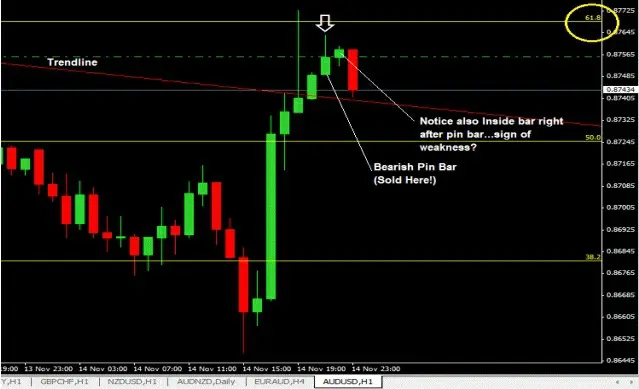
I put 50 pips at
risk for this trade, and if it succeeds, I'll make 7 times that amount in profit. My profit goal will be 215 pips, or the
previous swing low.
I was able to profit by 138 pip on my initial trade. Keep in mind that I also executed a second trade that profited 125
pips. Even though I didn't reach my profit target, I employed a trailing stop loss as indicated below until the price
moved back up and stopped me out
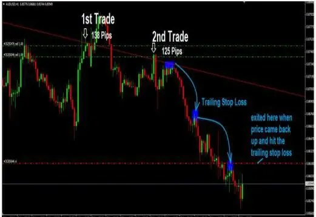
The good thing about these kind of trades is that
They have a great possibility of success and are extremely low risk/high reward entry trades.
You Can Gain Knowledge From Price Action In Two Ways:
● Start by spending hours reviewing your charts and asking yourself questions such, "Why did price make a huge
move up from here? Why did price make a big move down from here?" What price action signs developed there that
could have alerted anyone to the impending magnitude of this move? What kind of reversal candlesticks and chart
patterns you find will absolutely wow you.
● Now that you are aware of these patterns, return to the present and see if you can spot them developing in the
current market.
Here is an illustration of a doji candlestick that coincides with the main downward trend, as if it were signaling to
sell the market together with the trend. There were four confluent factors that supported this short trading setup:
➢ The doji formed urging you to sell the market with the trend because it had confluence with the dominating
downward trend.
➢ The breakout of the doji candlestick's bottom was what the sellers were looking for to drive the market lower
because the doji clearly indicated uncertainty on the part of both the buyers and the sellers.
➢ The fibonacci retracement zone of 50 to 61.8 is where the doji candlestick also developed.
➢ The dynamic resistance provided by moving averages.
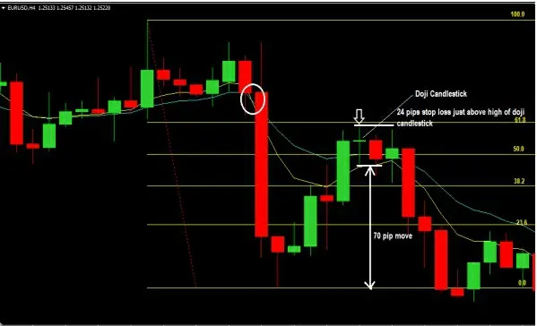
A second illustration:
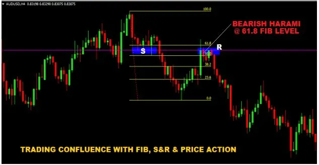
I can now display numerous charts with examples of prior events for you. It's preferable that you see and
comprehend what I'm saying now before sitting down and watching what happens on your charts in real time.
All of the information provided here is laying the groundwork and basic framework for you to trade price action;
learning occurs via observation and practice.
MULTI-TIMEFRAME ANALYSIS AND TRADING
I engage in multi-timeframe trading for the following two key reasons:
➢ To obtain superior trade entries
➢ I can increase the number of contracts I trade without increasing the risk to my trading account because of the
reward ratio. Consequently, if my trade direction is correct, I profit greatly!
Now, let me go into more depth about both.
How to Use Multi-Timeframe Analysis and Trading to Improve Trade Entries
and Reduce Stop Loss Distance
Your stop loss distance will be extremely large if you only trade on long time frames, such as the daily chart, and the
problem with that is that it may cause your risk-to-reward ratio to drop (though not always):
Risk to Reward Ratio, investing money in the stock market has a high level of risk, so if you're going to take the
chance, the potential reward must be significant. It might not be worth the risk if someone you only loosely trust
requests for a $50 loan and promises to reimburse you $60 in two weeks, but what if they promised to pay you
$100? It can be alluring to take a $50 loss in exchange for the possibility of making $100. Your risk:reward ratio
will be 1:2 in that situation.
What if, however, you made the decision to reduce your stop loss distance?
And even though you have a setup for trading on the daily chart, do you actually switch to the shorter period for
your trade entry and wait for a sell signal there?
In any case, the example I just gave of using multiple timeframes to trade is a great one.
To help you comprehend what I'm talking about, let's look at a chart of prior events.
The daily chart below displays a triple top formation at a strong resistance level. Price has been forced down from
this level twice, and when price reaches this level a third time, it is pushed down once more.
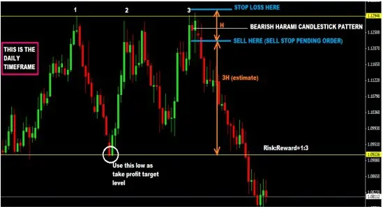
Now that the bearish harami reversal candlestick pattern is visible, you might have exploited it as a sell signal by
setting up a pending sell stop order a few pip below the bottom. And, as seen on the aforementioned chart, set your
stop loss outside of the resistance line.
The chart below (I've zoomed in to get a closer look) illustrates how your stop loss distances would be much smaller
if you shifted to the 1-hour timeframe to wait for trade entry:
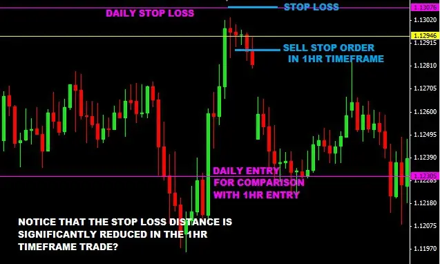
Comparing the two trades on the daily chart:
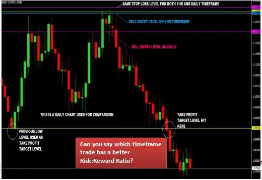
Be aware that the stop loss distance was much closer for the trade entered in the 1-hour timeframe than it was for the
transaction entered in the daily timeframe. Consequently, the risk:reward of a trade on the 1hr period is far better
than what you would receive on the daily.
You can now accomplish this with a daily timeline, a 4-hour timeframe, or even a 30- and 15-minute timeframe.
Alternately, you can monitor trade setups in the 4hour while entering trades in the 1horr, 30minutes, 15minutes, or
5minutes time frames.
I mostly make use of the 1hour time frame for my trading entries and can also go down to 5 minutes. I will
advice new trades to use 1hour or 4hour timeframe.
Therefore, you can actually trade a lot more contracts without increasing your risk while trading in the 1 hour (or
much lower timeframe) because your stop loss distance is much smaller than when trading in the larger timeframe.
For instance, the stop loss for a transaction on the 1hr timeframe is 20 pips, but it is 80 pips on the daily timeframe.
Assume you have a $10,000 account and put 2% ($200) of it at risk per trade. If you trade on the daily chart, your
stop loss of 80 pip is approximately $800, so you will need to trade 0.25 contracts to keep your risk at 2%.
But once you've traded for in the hour, you can trade one normal lot.
This straightforward illustration demonstrates why I patiently wait for trade opportunities to occur in the monthly,
weekly, daily, and 4-hour periods before using smaller timeframes to obtain reliable trade entries. This is the appeal
of employing price action in multi-timeframe trading.
I'll offer you one more illustration of a multi-time frame study.
On the monthly charts, I can see that EURJPY has been on an uptrend and I can also see that there is resistance at
149.115, which it has already crossed. The monthly chart is shown below:
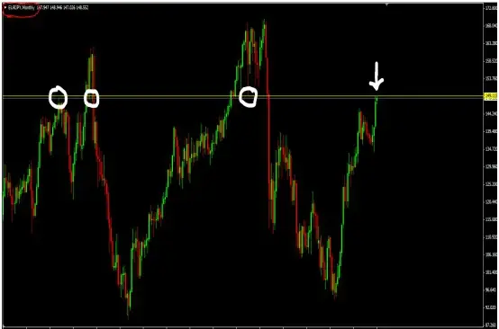
Let's now enlarge the daily chart to check how the price is moving relative to the direction of the arrow (see chart below):
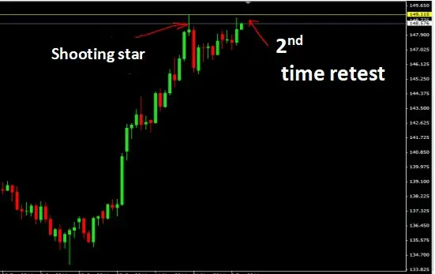
Okay, I can now see what's going on. With the development of the shooting star (a bearish candlestick indicator),
EURJPY has plainly been rejected down on the 149.115 resistance level, but I can now see that it is rising to retest
that level.
Here, two things could occur:
● Once the price reaches the resistance level, it will begin to decline ( and I will be waiting for a bearish reversal
candlestick there to sell when I see one).
● Alternatively, it will be broken, and if it does, the monthly chart shows a strong resistance level above it.
Let's now examine the 4 hour chart in more detail to see what is occurring there as well.
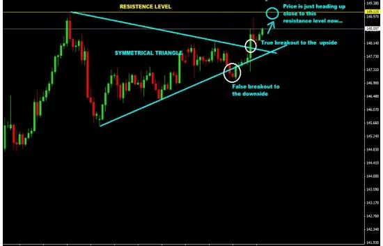
Now that you've seen how I conduct my multi-period analysis, you can see how I narrow down the timeframe to
which I place a trade while maintaining a close stop loss distance.
The issue with longer timeframes is this:
They hide trading setups that take place in shorter time frames and have the potential to be very reliable trading
setups.
However, when you alternate between timeframes, you start to realize how you may trade setups in the larger
timeframes based on setups that occur in the smaller timeframes.
I'm going to sit down and monitor this eurjpy setup to see if I can get a bearish reversal candlestick in the 1hr or the
4hr. It's probably going to happen tonight in about 4 to 8 hours, but the price is coming very near to that resistance
level. Even if this breakout moves to the upside, I won't be buying since I truly dislike trading breakouts when I can
clearly see that the price has been overbought for a considerable amount of time. If that occurs, I'll be watching for a
pullback to buy.